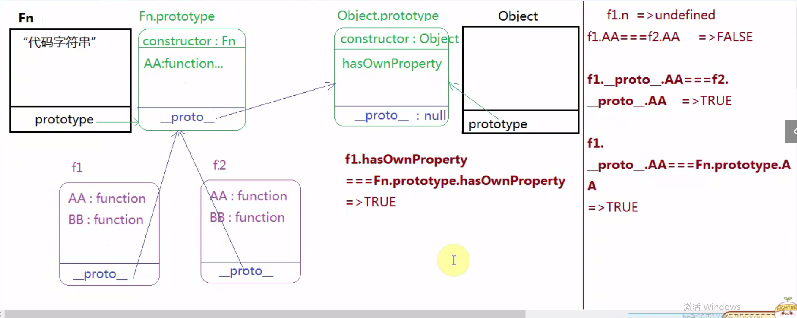

原型链及其查找机制分析
对象？普通对象，数组，正则，Math,arguments,实例时对象类型的，prototype的值也是对象类型的，函数也是对象类型的
原型链式一种基于__proto__向上查找的机制，当我们操作的实例的某个属性或者方法的时候，先在自己的空间总查找私有属性或者方法，
1.找到了，就查找结束
2,没找到，则基于__proto__找到所属类的prototype,如果找到了就用这个公有的，如果没找到,基于原型上的__proto__继续查找，如果找到object.prototype也没找到就返回了undefined
练习题
